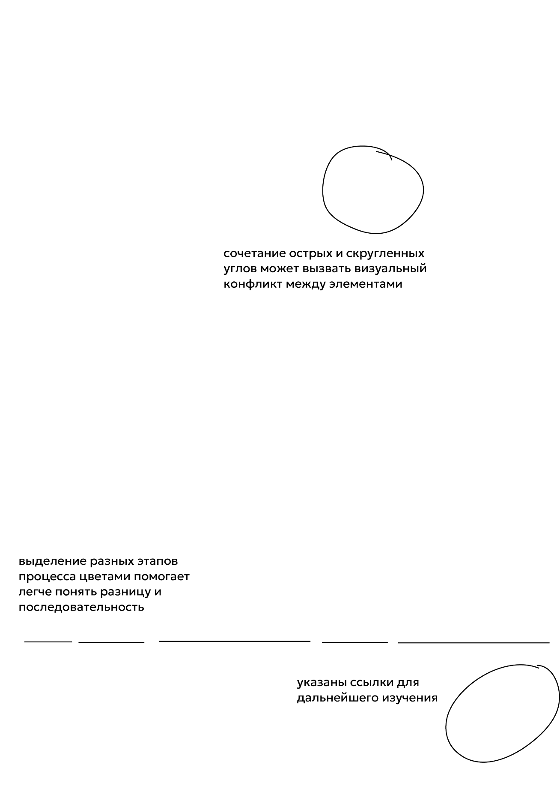

Постер имеет четкую, логически выстроенную структуру. Основные разделы (введение, методы, результаты, заключение) визуально отделены друг от друга, что облегчает восприятие информации и помогает аудитории быстро сориентироваться в содержании. Заголовок крупный и хорошо виден, привлекая внимание сразу к теме исследования. Использование сетки (три колонки, блоки в левой части плкаката занимают фиксированную ширину в две колонки) помогает выравнивать элементы и сохранять симметрию, что делает постер опрятным и профессиональным.
